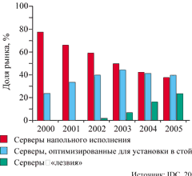
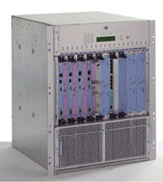
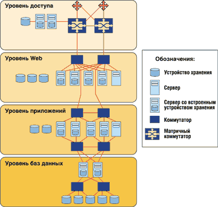
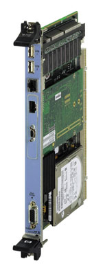

Андрей Борзенко
Способы конструктивного исполнения серверов, применявшиеся в течение последних нескольких лет и базирующиеся на использовании стандартной 19-дюймовой стойки, теперь пополнились новым модульным конструктивом (blade server design). Вместо специализированных источников питания, вентиляторов охлаждения и плат управления для каждой из N независимых систем модульные серверы используют единые средства подачи питания, единый корпус, общую систему охлаждения, унифицированные кабельные соединения и общую инфраструктуру управления для всех N серверов. Это решение не только обеспечивает компаниям, у которых ограничены площади, более высокую плотность размещения компьютерного оборудования, но и несет преимущества в управлении физически объединенными серверами. И хотя появление модульных конструкций не приведет к немедленному падению цен на серверы, это новое экономичное предложение позволит снизить эксплуатационные расходы, а со временем простота таких серверов и совместное использование ресурсов приведут и к снижению стоимости оборудования. На рис. 1 показано, как, по прогнозу IDC, вырастет в ближайшие годы доля "лезвий" среди серверов стандартной Intel-архитектуры.
|  | Рис. 1. Структура рынка серверов стандартной Intel-архитектуры.
|
В течение прошедших двух лет ряд начинающих фирм выпустили первое поколение специализированных модульных серверов, предназначавшихся в основном для молодых Интернет-компаний (dot-com) и поставщиков услуг. Это компании с наиболее загруженными информационными ресурсами и с огромной потребностью в компактных серверах, обеспечивающих высокую плотность размещения оборудования. К сожалению, хотя с технологических позиций эти фирмы выбрали верное направление, время их выхода на рынок оказалось неудачным. Некоторые компании перестали существовать; иные, к примеру RLX Technologies, были вынуждены существенно сократить свою активность. В настоящее время такие ведущие поставщики компьютерного оборудования, как Compaq, Dell, Fujitsu-Siemens Computer, Hewlett-Packard, IBM и Sun Microsystems, намереваются вторгнуться на этот рынок со всей мощью своих технических возможностей и каналов сбыта.
Корпорация Hewlett-Packard анонсировала семейство новых компьютеров одной из первых. Серверы с кодовым наименованием PowerBar представлены моделью bh7800 (шасси в корпусе для монтажа в 19-дюймовую стойку) и серверными модулями bc1100 на основе процессора Pentium III. Вместе с этими моделями Hewlett-Packard будет поставлять модули сетевых коммутаторов, блоки из дисковых накопителей для расширения емкости хранения, а также модули управления. Линейка серверов PowerBar вызывает особый интерес благодаря примененным в ней конструкторским решениям и некоторым свойствам этого продукта.
|  | Серверы-"лезвия"
|
Рецепт от PowerBar
Вместо введения новых "фирменных" конструктивных параметров - как поступают многие компании, пытающиеся выразить себя в этом новом секторе рынка, - корпорация приняла на вооружение конструктивные нормы и средства выполнения межсоединений, определяемые стандартом Compact PCI (cPCI, http://www.picmg.org). Этот стандарт не столь распространен в сравнении с вездесущим PCI, широко используемым при создании корпоративных серверов и оборудования для информационных центров; тем не менее он широко применяется в телекоммуникационном оборудовании и различных встроенных приложениях.
Используя стандартный подход, получивший широкое признание у телекоммуникационного сообщества, Hewlett-Packard четко фиксирует рыночное позиционирование выпускаемых серверов. У корпорации накоплен большой и успешный опыт работы с телекоммуникационными компаниями, которые постоянно создают новые услуги и совершенствуют свою инфраструктуру. Это также оправданно, учитывая сильные позиции Hewlett-Packard в этой области благодаря таким продуктам, как OpenCall и OpenView.
Однако, выпустив модели семейства PowerBar, компания Hewlett-Packard нацеливается на реализацию более широкой номенклатуры модульных компьютерных устройств, чем это требуется для обслуживания потребностей телекоммуникационных компаний и поставщиков услуг. По мнению представителей корпорации, этот спектр шире, чем у большинства ее конкурентов, и охватывает не только серверы, но также дисковые системы хранения данных, сетевые коммутаторы и другие компоненты, которые также станут доступны в виде модульных блоков.
Compact PCI - связующее звено
В массовых компьютерах стандарт Compact PCI встречается довольно редко. Однако, если взять системы, поддерживающие работу телекоммуникаций, военные, промышленные, медицинские и иные встраиваемые приложения, открывается совершенно иная картина. По имеющейся информации, например, в 2000 г. продуктов этого класса было продано на сумму более 500 млн долл., и эта цифра к 2004 г. может вырасти вчетверо.
Если первоначально стандарт cPCI формировался как просто более надежный вариант локальной шины PCI, столь популярной в корпоративных серверах, то со временем он был значительно расширен. Одно из подтверждений тому - набор спецификаций промышленного класса, определяющих требования к компоновке плат. Весьма распространенный размер 6U для плат cPCI больше габаритов аналогичных плат для шины PCI, что позволяет размещать большее число электронных компонентов и, следовательно, расширяет функциональные возможности. В этих платах применяются направляющие штырьки и захваты, благодаря которым плата очень надежно соединяется и удерживается в корпусе. Повышенной безопасностью характеризуются и электрические разъемные соединения, использующие интерфейс pin-in-socket, который не только значительно более долговечен и надежен, чем краевые разъемы традиционных плат PCI, но и имеет увеличенное число контактов (535), большая часть которых остается свободной и предназначается для последующих расширений стандарта. Некоторые из контактов этого разъема нашли удачное применение для реализации специфических требований приложения, таких как поддержка шины H.110, которая передает голосовой трафик TDM в телекоммуникационных приложениях. В самой последней версии спецификаций стандарта cPCI, версии 2.16, одобренной лишь в прошлом году, эти дополнительные выводы использованы весьма эффективно.
В версии 2.16 предусмотрено наложение поверх традиционной шины PCI сети на основе Ethernet - в терминологии cPCI это объединительная плата с функциями коммутации пакетов (Packet Switching Backplane, PSB). В результате получается встроенная системная сеть (Embedded System Area Network, ESAN), представляющая собой технологию Ethernet, как бы вживленную в шасси на основе технологии cPCI. Это удачное решение в плане развития возможностей системы, поскольку коммутируемый Ethernet (особенно его гигабитный вариант) значительно увеличивает общую ширину полосы пропускания в системе. Использование более сбалансированного протокола, чем PCI, также обеспечивает намного более эффективную изоляцию серверов и не допускает возникновения условий для отказа. Заметим, что все это достигается за счет применения распространенного сетевого стандарта, известного и принятого повсеместно.
Поддержка Ethernet реализована на основе стандартного шасси с шиной cPCI 2.16 и стандартных межсоединений - это структура, специально разработанная для модульных устройств, как раз и рассчитанных именно на такие возможности шасси и сети. На самом деле здесь "новое - это хорошо забытое старое", поскольку технология cPCI для модульных серверов возвращает нас непосредственно к одноплатным компьютерам (Single Board Computer), которые были распространены лет десять назад, но сегодня присутствуют главным образом во встроенных системах. Модульные серверы тем самым дают новую жизнь технологии одноплатных компьютеров, возвращая их в ряды серийно выпускаемых компьютерных устройств.
В дополнение к двойной подсистеме 10/100/1000 Ethernet блок bh7800 поддерживает также соединение двойного Fibre Channel со скоростью 1 Гбит/с. Хотя модули первого выпуска не способны использовать все преимущества гигабитных вариантов Ethernet и Fibre Channel, компания Hewlett-Packard планирует реализовать их поддержку уже в этом году. В будущем специальные сетевые платы можно будет предлагать на рынке в качестве средств расширения возможностей шасси при организации сетей хранения данных.
Во многих отношениях механические спецификации, требования к питанию и компоновке плат для стандарта cPCI становятся более важными, чем оригинальная архитектура сигналов шины PCI. В телекоммуникационных применениях шина PCI традиционно дополняется специфическими шинами, такими как H.110. В конструкции модульных серверов традиционные компоненты PCI остаются в основном незадействованными, но, по мнению разработчиков, такова цена эволюции.
Истинно значимый атрибут cPCI - открытость и строгость его спецификаций. Этот факт привел к возникновению значительного числа компаний, разрабатывающих устройства для данного стандарта. При конструировании своих модульных серверов Hewlett-Packard перенесла в них и надеется поднять на новый уровень все достоинства платформы. Использование стандартной инфраструктуры не только устраняет необходимость разработки и изготовления очередного специализированного типа шасси, соединителей и т. п., но и позволяет не тратить время на разработку и изготовление компонентов, воспользовавшись готовыми. Аргументация здесь примерно такая. Кто-то уже сделал хороший корпус для шасси cPCI? Прекрасно - заключим с ними OEM-соглашение. Кто-то уже сподобился разработать модуль сетевого коммутатора? Отлично! Давайте приобретем лицензию на его изготовление. Никто еще не сделал модуль на основе процессора PA-RISC? Ну что ж, приложим некоторые усилия в этом направлении, а заказчики определенно заинтересуются такими модулями. Здесь слышен отголосок борьбы за стандартные компьютеры, собираемые из серийно выпускаемых готовых компонентов. Но этот принцип поднят на новый уровень - используются уже не исходные компоненты, а целые функциональные модули.
Среди готовящихся к выпуску модулей производства Hewlett-Packard, построенных на основе процессоров Intel и PA-RISC, есть устройства хранения, сетевые коммутаторы и устройства расширения. Однако ничто не мешает и другим поставщикам предлагать конкурентоспособные модули - самостоятельные или функционально дополняющие уже имеющиеся (рис. 2). Есть все основания полагать, что Hewlett-Packard поощряет других производителей к этому, для чего сотрудничает с несколькими компаниями в разработке устройств специфической функциональности, не свойственной Hewlett-Packard, таких как серверные приставки для реализации межсетевых экранов, устройств кэширования контента Интернет и виртуальных частных сетей (VPN).
|  | Рис. 2. Четыре уровня функциональности серверов-"лезвий".
|
Сразу после анонсирования новых серверов о поддержке новой концепции корпорации, основанной на открытых стандартах, заявили Accton Technology, Agilent Technologies, AMD, Amphus, Brocade, Diversified Technology, Ensim, F5 Networks, Force Computers, GDA Technologies, InfoValue, Inktomi, Intel, Oracle, OSA Technologies, PolyServe, Radisys, RealNetworks, Savastra Systems, SBS Technologies, ServerWorks, SonicWall, Transmeta и TurboLinux.
Аналитики Gartner Group предупреждают, что отсутствие стандартов на серверы-"лезвия" может привести к сдерживанию развития рынка этих устройств. Если монтируемые в стойку серверы способны работать с оборудованием и ПО различных производителей, то с серверами-"лезвиями" ситуация иная.
Процессоры, заточенные под "лезвия"В конце прошлого года корпорация Intel (http://www.intel.com) анонсировала новую линейку продукции для формирующегося рынка сверхкомпактных серверов с низким уровнем энергопотребления. Линейку открыл процессор Pentium III (ядро Tualatin) со сверхнизким энергопотреблением - с тактовой частотой 700 МГц и встроенной в кристалл кэш-памятью емкостью 512 Кбайт. Процессор работает при сверхнизком напряжении 1,1 В. Одновременно был представлен набор микросхем системной логики Intel 440GX, надежность и высокая производительность которого, столь необходимые для серверной продукции, обеспечиваются применением кода коррекции ошибок и поддержкой системной памяти большой емкости (до 2 Гбайт). В начале этого года Intel представила версию серверных процессоров Pentium III с тактовой частотой 1,40 ГГц и кэш-памятью 2-го уровня емкостью 512 Кбайт. Процессор, изготавливаемый с соблюдением проектных норм 0,13 мкм, предназначен для серверов со сверхвысокой плотностью компоновки. Наращиванию производительности при одновременном снижении энергопотребления способствует и использование технологии высокоскоростных медных соединений вместо алюминиевых, что повышает скорость передачи данных внутри процессора. По сравнению с предшествующей технологией 0,18-мкм экономия энергии, потребляемой процессорами Intel, которые изготовлены по 0,13-мкм технологии, достигает 40%, а прирост быстродействия - 20%. |
Шасси и модули
Как же выглядят серверные модули от Hewlett-Packard? Прежде всего следует провести различие между корпусом - маркировка bh7800 (он же шасси) и индивидуальными модульными серверами - маркировка bc1100 (рис. 3). Шасси bh7800 - это корпус высотой 13U для установки в стандартную 19-дюймовую стойку. В нем может располагаться до 16 серверных модулей (серверов-"лезвий"), а также сдвоенные (резервированные) сетевые коммутаторы, платы управления и платы ввода-вывода. В конструкции корпуса использованы выдвижные передние и задние панели, а также блоки питания и вентиляторы, которые характеризуются избыточностью N+1 и возможностью горячего подключения и замены.
|  | Рис. 3. Модуль bc1100.
|
На первый взгляд размещение 16 серверов в пространстве 13U не выглядит таким уж значительным преимуществом в сравнении с системой, построенной на основе тонких серверов высотой 1U каждый. Система из 16 тонких серверов займет от 18 до 16 единиц плюс 2U для сетевых коммутаторов (в модульном варианте они располагаются в основном блоке, а для тонких серверов являются внешними). Но в шасси для модульных серверов Hewlett-Packard располагаются, кроме серверов, 16 модулей ввода-вывода, два сетевых модуля и модуль управления.
Далее, плотность размещения компьютерных систем в стандартной 19-дюймовой стойке часто измеряют в единицах высоты передней панели устройств - U (1U = 1,75 дюйма = 4,445 см), но это линейная единица, в то время как плотность по определению связана с занимаемым объемом. Это означает, что в большинстве случаев, говоря о плотности размещения оборудования, не учитывают глубину стойки, т. е. предполагается, что используется обычный 19-дюймовый шкаф глубиной 36 дюймов. Так, тонкие серверы характеризуются глубиной 24-26 дюймов и требуют стойки глубиной как минимум 30 дюймов, чтобы обеспечить место для прокладки и распределения сетевых, питающих и иных кабелей, поэтому большинство тонких серверов помещают в еще более глубокие стойки - до 36 дюймов. Но bh7800 имеет глубину всего 18 дюймов, т. е. по глубине занимает в два раза меньше места, что позволяет использовать менее громоздкие стойки. Если заняться подсчетами, то можно обнаружить, что модульные серверы-"лезвия" занимают порядка 36% от объема, необходимого для обычных тонких серверов.
В полностью заполненной стандартной 19-дюймовой стойке высотой 48U можно разместить до 48 модульных серверов Hewlett-Packard в трех отдельных шасси. Это всего на 26% больше, чем в альтернативном варианте из 38 тонких серверов высотой 1U, но общая площадь, занимаемая оборудованием, и объем, занимаемый собственно модулями-"лезвиями", значительно меньше (таблица).
Серверные модули против тонких серверов
| Модули Hewlett-Packard (Blades) | Тонкий сервер высотой 1U | ||
| Типовой однопроцессорный | Двухпроцессорный | ||
| Всего серверов | 48 | 38 | 38 |
| Всего процессоров | 48* | 38 | 76 |
| Общая высота | 39U | 38U | 38U |
| Сетевые коммутаторы | - ** | 4U | 4U |
| Свободное пространство в стойке | 3U | - | - |
|
* Этот показатель возрастет, когда (предположительно к середине 2002 г.) HP начнет выпуск двухпроцессорных модулей на основе процессоров PA-RISC или Pentium. ** Поскольку на шасси Hewlett-Packard уже имеются сетевые коммутаторы, они не увеличивают занимаемое оборудованием место в стойке. |
|||
Это достаточно высокая плотность, однако, оставив в стороне маркетинговую риторику, можно указать и на иные роли и преимущества модульных серверов. Кабели, кабели и еще раз кабели. Кабельное хозяйство (а чаще - отсутствие хорошего решения в этой сфере) отравляет жизнь многим руководителям ИТ-служб. Если вид спереди на стойку, заполненную тонкими серверами, - это просто верх элегантности в дизайне компьютерного оборудования, то вид сзади (особенно у непосвященных) заставляет сердце сжиматься от ужаса при взгляде на путаницу змеящихся в разных направлениях разноцветных проводов - шнуров питания, сетевых кабелей, кабелей, соединяющих дисковые подсистемы, кабелей для клавиатуры, дисплея и мыши. Специалисты хорошо знают, что конфигурировать современную серверную стойку далеко не просто, однако еще сложнее поддерживать ее работоспособность после многочисленных замен, дополнений и изменений назначения ее элементов. И здесь концептуально простой акт физической разводки кабелей превращается в головоломный секрет, присущий вычислительным системам с высокой плотностью размещения оборудования. Вот почему свободная от путаницы кабелей задняя панель систем модульных серверов значительно облегчает установку и управление такими комплексами, не говоря уже о повышении надежности и снижении эксплуатационных расходов, поскольку в них нет места ошибочным отключениям севых кабелей или кабелей питания. Время, требуемое для изменения конфигурации, может сократиться весьма существенно. Да, одно лишь это преимущество в управлении кабельным хозяйством и его физической консолидации способно оправдать затраты, связанные с переходом на такую систему.
Модули
Первые модули, выпущенные компанией Hewlett-Packard под маркой bc1100, - это платы cPCI размером 6U. Хотя такой модуль весит всего примерно 900 г, он представляют собой законченный сервер Intel-архитектуры (без блока питания, вентиляторов и корпуса). В каждом таком модуле используется процессор Pentium III (Coppermine) с частотой ядра 700 МГц и до 512 Мбайт оперативной памяти ECC RAM (в одном слоте типа DIMM); кроме того, в них имеется локальный жесткий диск емкостью 30 Гбайт.
Чтобы свести к минимуму размеры и потребляемую мощность, для этих модулей выбираются жесткие диски, предназначенные для переносных компьютеров, т. е. с интерфейсом IDE и скоростью вращения шпинделя 4200 об./мин. И хотя этих параметров вполне достаточно для того, чтобы проводить начальную загрузку, хранить файлы приложений и выполнять многие задачи работы с файлами (что часто имеет место, скажем, в Web-серверах), этого явно недостаточно для формирования высокопроизводительной дисковой подсистемы. К середине этого года Hewlett-Packard планирует выпустить модули дисковых подсистем, построенные на основе более быстродействующих дисков с интерфейсом Fibre Channel, а также двухпроцессорные модули на основе процессоров Intel Pentium или PA-RISC, что значительно изменит общую картину.
В каждом блоке bc1100 предусматривается выделенная плата дистанционного управления и процессор обслуживания. В первоначальном исполнении эти устройства крепились как навесные элементы, что позволило HP быстро выйти на рынок, используя лишь готовые компоненты. В будущих версиях вся эта функциональность будет реализована на одном кристалле. Для тех, кому не подходит управление модулями при помощи локальной сети (или кто не может этого сделать из-за какой-либо неисправности), bc1100 предоставляет возможность воспользоваться прямыми KVM-портами (это видеопорт SVGA, последовательный порт мини-RS232 и два USB-порта), расположенными на передней панели.
Модули Hewlett-Packard соответствуют спецификациям на устройства горячей замены PICMG 2.1 Hot Swap, и в них имеются электронные датчики, фиксирующие момент физического удаления модуля из шасси или его подключения. Поскольку основное соединение для каждой платы - Ethernet, такая конструкция обеспечивает чрезвычайно высокую степень разделения и изолированности различных модулей, находящихся на одном и том же шасси. Ситуация, при которой один из модулей окажет неблагоприятное воздействие на работу соседнего, практически исключена. Здесь, конечно, не рассматриваются ситуации возникновения пожара или образования огромной электрической дуги, что весьма маловероятно.
Со стороны, противоположной отсеку с серверными модулями, имеется место для размещения дополнительных IDE-дисков - по два на каждый серверный модуль. Поскольку дисковые модули используют проходные функции шины cPCI, они должны располагаться непосредственно напротив соответствующих серверных модулей - это ограничение требует от персонала внимательности при установке модулей в физические гнезда. Учитывая, что платы бывает необходимо добавлять как с фронтальной, так и с тыльной части корпуса, важно предусмотреть в помещении достаточно места, чтобы обеспечить свободный доступ как спереди, так и сзади.
Хотя в каждом блоке bh7800 может находиться множество разнотипных модулей, их трудно перепутать благодаря цветовой кодировке. Так, светло-голубой цвет указывает на серверный модуль, а вот светло-фиолетовый - на дисковую подсистему. Свои цвета назначены сетевым коммутаторам и модулям управления.
Продвигаясь вперед
К настоящему времени номенклатура модулей для этой платформы уже достаточно широка, однако со временем их станет намного больше. Первоначально большинство модулей будут подключаться к локальным коммутаторам через порты 10/100 Ethernet, а связь с внешними устройствами пойдет через гигабитный Ethernet. Однако в рамках стандарта cPCI уже определены возможности сетевых подключений, которые требуются каждому модулю для связи через Gigabit Ethernet и Fibre Channel, поэтому создаваемые в будущем продукты смогут воспользоваться этими усовершенствованными функциями в сетевых коммутаторах и других платах. В скором времени ожидается появление модулей на основе InfiniBand, хотя для полной поддержки IB потребуется очередная версия стандарта cPCI (известная пока как 3.0).
При наличии стандартизованного шасси и межсоединений следует ожидать появления множества разнообразных по назначению модулей как от Hewlett-Packard, так и от других фирм-производителей.
В разработке находятся модули PA-RISC, которые появятся в первой половине года. Не будет неожиданностью появление модулей на основе более быстрых процессоров Pentium, Intel-совместимых процессоров от AMD и Transmeta, а также альтернативных RISC-процессоров, таких как PowerPC, MIPS и SPARC. Можно ожидать, что модульные серверы будут все интенсивнее интегрироваться в такие специализированные решения, как телефонные системы частного пользования и коммутаторы. За пределами корпоративного применения и инфраструктуры сетей и телекоммуникаций модульные серверы на основе cPCI хорошо подходят для множества встраиваемых приложений, включая промышленные системы мониторинга и управления.
Выбранный Hewlett-Packard стандарт cPCI и конструктивное решение на его основе оптимизированы для применения в сфере телекоммуникаций. Это решение также совместимо со стандартом Network Equipment Building Standard (NEBS), что позволяет развертывать его как в головных офисах, так и в телефонных стойках, расположенных в удаленных подразделениях предприятия. Телекоммуникационные компании заинтересованы в расширении возможностей своего оборудования и развитии своих сетевых услуг, поэтому перспективы систем типа PowerBar на этом рынке весьма благоприятны.
И хотя конструкция систем PowerBar выглядит весьма "телекомовской", нет никаких причин, не позволяющих адаптировать оборудование на основе cPCI для корпоративных приложений и поставщиков услуг Интернета. Короткое время выхода продукта на рынок и возможность пользоваться услугами разнообразных поставщиков - факторы, привлекательные практически для всех заказчиков. Консолидация парка серверов без внесения неразберихи в кабельное хозяйство и работу всего предприятия может также стать достаточно веским резоном.
"Лезвия" и LinuxПо мнению экспертов, ОС Linux, предъявляющая весьма скромные требования к объему дисковой и оперативной памяти и лучше прочих использующая ресурсы процессора, - это наилучший выбор для серверов-"лезвий", от которых требуется универсальность и масштабируемость при работе в условиях жестких ограничений на энергопотребление. По имеющимся данным, под управлением ОС Linux работает около 30% всех Web-серверов в Интернете и 60% серверов, располагающихся на границах между сетями. Для управления ресурсами серверов-"лезвий" Hewlett-Packard предоставляет заказчикам решения сетевого управления, работающие в среде Linux. Эти решения реализуют надежные и удобные в обслуживании системы, способствующие укреплению постоянно функционирующей инфраструктуры Интернета. При помощи системных и управляющих инструментов, таких как HP OpenView, MC/ServiceGuard и HP Toptools, заказчики получают возможность создавать вычислительные системы с интегрированным мониторингом и простым управлением всеми вычислительными, дисковыми, программными и сетевыми ресурсами существующей инфраструктуры. Hewlett-Packard планирует поддерживать ряд дистрибутивов Linux, в первую очередь Red Hat, SuSE и Debian. Намечен также выпуск серверов, поддерживающих ОС Microsoft и HP-UX. |